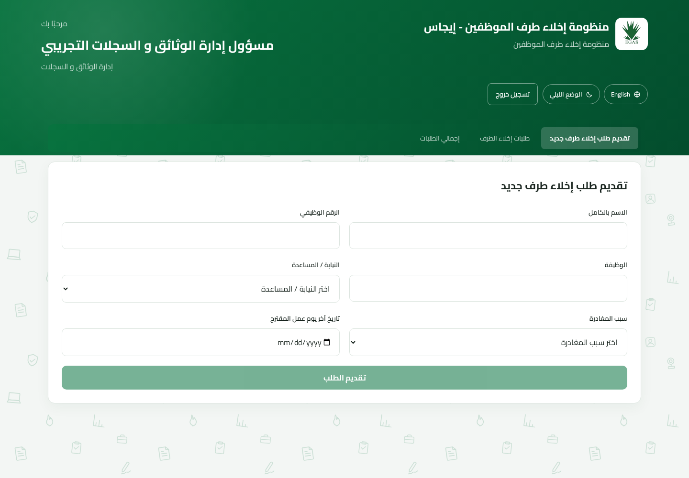
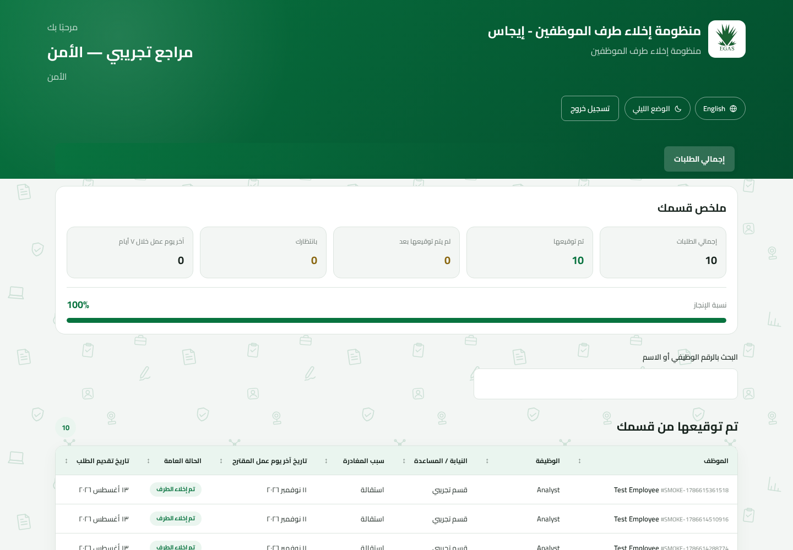
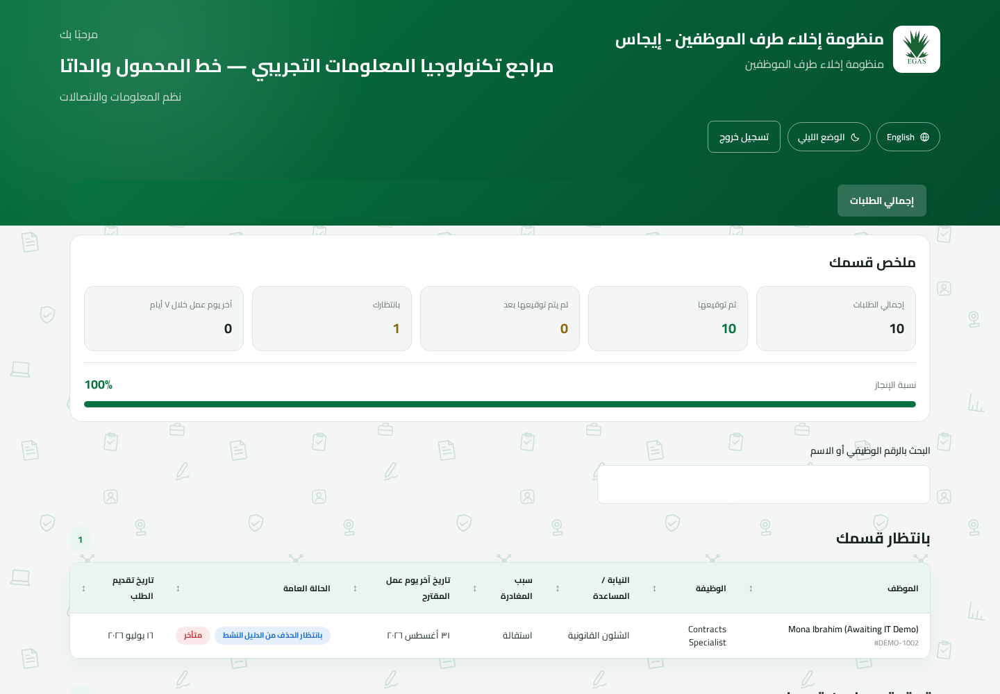

دليل الموظف · الإصدار ٢٫٠
دليل الموظف
لإدارة الوثائق والسجلات ومراجعي الإدارات وتكنولوجيا المعلومات والأجور والشئون المالية.
لإدارة الوثائق والسجلات ومراجعي الإدارات وتكنولوجيا المعلومات والأجور والشئون المالية.
هذا الدليل للموظفين الذين ينشئون طلبات إخلاء الطرف ويراجعونها ويوقعونها ويعتمدونها ويستكملونها. إدارة الحسابات موثقة في دليل منفصل.
| ١. الغرض والأدوار ومسار العمل | لجميع المستخدمين |
| ٢. بدء الاستخدام وأمان الحساب | لجميع المستخدمين |
| ٣. إدارة الوثائق والسجلات | إنشاء الطلب والمتابعة |
| ٤. مراجعو الإدارات | الإدارات ١–١١ |
| ٥. تكنولوجيا المعلومات والإجراء النهائي | تكنولوجيا المعلومات |
| ٦. الأجور والشئون المالية | المرحلة الثانية |
| ٧. استكشاف المشكلات | لجميع المستخدمين |
تستبدل المنظومة تداول نموذج إخلاء الطرف الورقي. تنشئ إدارة الوثائق والسجلات الطلب، وتراجعه ١٣ إدارة، ثم تفحص إدارة الوثائق والسجلات مستندات التوقيع، وتنفذ تكنولوجيا المعلومات الإجراء النهائي لإزالة صلاحيات الموظف.
| الدور | المسئولية الأساسية | نطاق الرؤية |
|---|---|---|
| إدارة الوثائق والسجلات | إنشاء الطلبات ومتابعتها وفحص الأدلة وإعادة فتح التوقيعات غير الواضحة والاعتماد وتنزيل PDF. | جميع الطلبات والأدلة، مع إخفاء هوية الموقّع. |
| مراجع الإدارة | المراجعة والتوقيع نيابة عن إدارة واحدة. | جزء الإدارة المكلف بها فقط في الطلبات المتاحة. |
| مراجع تكنولوجيا المعلومات | إنجاز بند محدد من البنود الخمسة؛ ويمكن لأي مراجع IT تنفيذ الإجراء النهائي عند الجاهزية. | تفاصيل IT ومؤشرات الجاهزية الآمنة. |
| مراجع الأجور أو المالية | التوقيع بعد اكتمال المرحلة الأولى والإشراف على الحالة العامة. | الإدارات والموقعون والتوقيتات والأدلة والتحليلات. |
| المسؤول | إنشاء حسابات إدارة الوثائق والمراجعين وإعادة تعيينها وحذفها. | الحسابات المسموح بإدارتها فقط، دون طلبات الإخلاء. |
| المسؤول الرئيسي | إدارة حسابات المسؤولين. | حسابات المسؤولين فقط، دون طلبات الإخلاء. |
تعمل الإدارات من ١ إلى ١١ بالتوازي. تكنولوجيا المعلومات هي الإدارة رقم ١٠ ولها خمسة بنود منفصلة. لا تُفتح الأجور والاستحقاقات والشئون المالية إلا بعد اكتمال جميع إدارات المرحلة الأولى.
شاشة تسجيل الدخول العربية الفعلية. قائمة الحسابات التجريبية خاصة ببيئة العرض وقد لا تظهر في الإنتاج.
لا يوجد خيار ذاتي لتغيير كلمة المرور. للحصول على كلمة مختلفة، اطلب من المسؤول إعادة تعيين حسابك — المسؤول، وليس تكنولوجيا المعلومات، فهي لم تعد تعيد تعيين الحسابات أو تحذفها.
كلمة المرور التي يُصدرها المسؤول عند إعادة التعيين (بخلاف الكلمة التي حُددت عند إنشاء الحساب) مؤقتة. سجّل الدخول بإدخال كلمة المرور المؤقتة التي زوّدك بها المسؤول. توجهك المنظومة بعدها إلى شاشة تعيين كلمة مرور جديدة، حيث تختار كلمة مرور دائمة جديدة من ١٢ حرفًا على الأقل وبها رمز، ثم تؤكدها.
يتطلب التوقيع وإعادة الفتح والاعتماد والحذف وإعادة تعيين الحساب وإزالة الصلاحيات إدخال كلمة المرور الحالية مرة أخرى.
استخدم «نسيت كلمة المرور؟» أو «هل تحتاج مساعدة؟» للوصول إلى بيانات مسؤول أو مسؤول رئيسي. لا ترسل المنظومة رابطًا بالبريد.
تدير قائمة العمل المشتركة من إنشاء الطلب إلى اعتماد الأدلة وتنزيل النموذج النهائي.

لوحة إدارة الوثائق والسجلات الفعلية.
| الحالة | المعنى | الإجراء |
|---|---|---|
| قيد التنفيذ | إدارة واحدة على الأقل أو إجراء نهائي ما زال معلقًا. | افتح الطلب لمعرفة المطلوب. |
| المرحلة الثانية مقفلة | إدارة من ١–١١ لم تنته. | انتظر المرحلة الأولى. |
| جاهز لمراجعة الأدلة | وقّعت الإدارات الـ١٣. | عاين كل دليل وملف PDF المركب. |
| معتمد وينتظر إزالة الصلاحيات | قُبلت الأدلة ولم تنفذ IT الإجراء الأخير. | نسق مع تكنولوجيا المعلومات. |
| مكتمل / تم الإخلاء | اكتملت التوقيعات والاعتماد وإزالة الصلاحيات. | نزّل واحفظ PDF وفق السياسة. |
إذا كان الدليل غير واضح، اختر الإدارة أو بند IT واستخدم إعادة الفتح ثم أدخل كلمة مرورك. تمسح العملية التوقيع والدليل وتلغي أي اعتماد سابق، ويجب على المراجع إعادة التوقيع.
إذا كانت الأدلة سليمة، اختر اعتماد وأكد بكلمة المرور الحالية. لا يكتمل الطلب بهذا الاعتماد وحده؛ يبقى إجراء إزالة الصلاحيات لدى IT.
يعمل المراجع نيابة عن الإدارة المكلف بها فقط. الإدارات العادية لها توقيع واحد لكل طلب؛ ويمكن لأي مراجع مخول في الإدارة إكماله.

لوحة مراجع إدارة الأمن الفعلية مع مؤشرات العمل.
إذا حدث خطأ قبل الاكتمال النهائي، يمكن للمراجع المخول إعادة فتح توقيع إدارته والتوقيع من جديد. تمسح إعادة الفتح الدليل السابق وتلغي اعتماد إدارة الوثائق السابق.
قسم IT مجزأ إلى خمسة بنود، وكل بند مرتبط بصورة دائمة بحساب مراجع واحد.
| البند | نطاق التحقق |
|---|---|
| خط المحمول وخط الداتا | خدمات المحمول والبيانات الخاصة بالشركة. |
| الهاتف | أصول أو خدمة الهاتف. |
| الكمبيوتر والحساب والبريد الإلكتروني | جهاز العمل وحساب النظام والبريد. |
| خدمات SAP | الخدمات المتعلقة بـ SAP. |
| إزالة حساب SAP | إزالة هوية SAP. |

لوحة IT الفعلية؛ يظهر طلب ينتظر الإجراء النهائي في بيانات العرض.
بعد توقيع جميع الإدارات واعتماد إدارة الوثائق والسجلات، يمكن لأي مراجع IT تنفيذ الإجراء النهائي. تأكد عمليًا من إزالة صلاحيات الموظف، ثم نفذ الإجراء وأدخل كلمة المرور. عندها فقط يصبح الطلب مكتملًا.
تُفتح الأجور والاستحقاقات والشئون المالية معًا بعد اكتمال المرحلة الأولى. يمكنهما رؤية حالات الإدارات والموقعين والتوقيتات والأدلة والتحليلات.

لوحة الإشراف الفعلية للأجور والاستحقاقات.
يجب أن تكون الملاحظات واقعية ومرتبطة بإخلاء الطرف، وألا تتضمن كلمات مرور أو بيانات شخصية غير ضرورية.
| المشكلة | التفسير المحتمل | الحل |
|---|---|---|
| تعذر الدخول | بريد/كلمة مرور خاطئة أو حساب محذوف أو كلمة مؤقتة. | راجع الكتابة وCaps Lock ثم تواصل مع المسؤول المناسب. |
| لا تظهر إلا شاشة كلمة مرور جديدة | أعاد المسؤول تعيين الحساب. | أنشئ كلمة دائمة مطابقة للشروط. |
| الطلب غير ظاهر | صلاحية الدور أو قفل المرحلة أو مرشح البحث. | امسح البحث وافحص قوائم الانتظار والمنجز وتحقق من التكليف. |
| رُفض الملف | نوع غير مدعوم أو ملف كبير. | استخدم JPG أو PNG أو PDF واضحًا وأصغر. |
| الأجور/المالية مقفلة | إدارة من المرحلة الأولى لم تنته. | استخدم لوحة الإشراف لتحديدها. |
| تعذر الاعتماد | الإدارات غير مكتملة أو فشل تأكيد كلمة المرور. | عالج المعلق وأعد المحاولة بكلمة المرور الحالية. |
| تعذر إزالة الصلاحيات | التوقيعات أو اعتماد إدارة الوثائق غير مكتمل. | راجع مؤشرات الجاهزية ونسق مع الدور المعلق. |